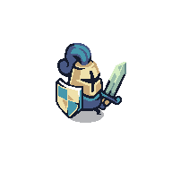
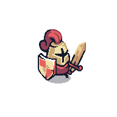
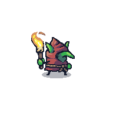
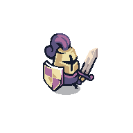
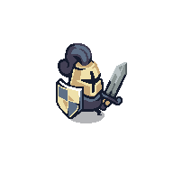
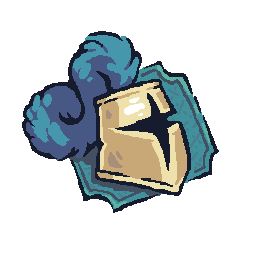
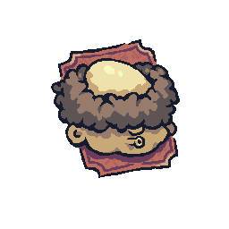
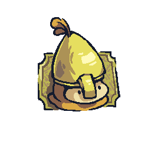

Bluehaven
Green hills, gentle sheep, the smell of a fire that never quite goes out. Home — what's left of it.
THE WORLD
Long before the Banner was raised, the Bluehaven Isles were a string of green specks in the western sea — farms, fishing villages, and one stone keep on the tallest hill. The King ruled gently. His Banner hung above the throne, gold thread on blue cloth, the symbol of a kingdom that had never been broken.
Then it was.
THE LANDS
Green hills, gentle sheep, the smell of a fire that never quite goes out. Home — what's left of it.
Sea-battered cliffs where Red watchtowers count every sail and an archer can outwait a tide.
Half-bog, half-meadow, full of dynamite. The goblins live where no flag can be planted long enough to grow stale.
Moss-grown ruins under leaves so dense the sun arrives in scraps. The trees remember a different age.
Iron walls and smelter chimneys. A barracks that forges soldiers faster than a sword can cut them down.
THE FACTIONS

Once a hundred strong, now just one. The last knight of Bluehaven carries the King's old sword and no shield he did not earn back.

Captain Redmane's mercenaries — paid in gold, loyal to whoever pays more. They took the Banner because someone offered them enough.

Wild little things with torches and dynamite. They follow no king. Redmane's gold rents their loyalty by the wave.

A clan as old as the trees. Their monks fight and heal with the same hand. They have no banner. They do not need one.

A warlord state forged behind iron walls. The Fort answers to no king — until Redmane offered them a kingdom.
THE PEOPLE

Last of the Blue Order
Carries the King's old sword. Says little. Hits hard. Eats stew.
Bluehaven elder
Has buried two kings and three husbands. Watched dawn come red the morning the Banner fell. Sends you forward with a sword and questionable cooking advice.

Mercenary captain, Red Crown
Took the Banner. Charges into every fight first, runs from every consequence second. Cannot tell knights apart from fruit.

The King's last guard
Survived the dawn by hiding in a thornbush. Reappears between battles to nod sagely and offer no actual help.